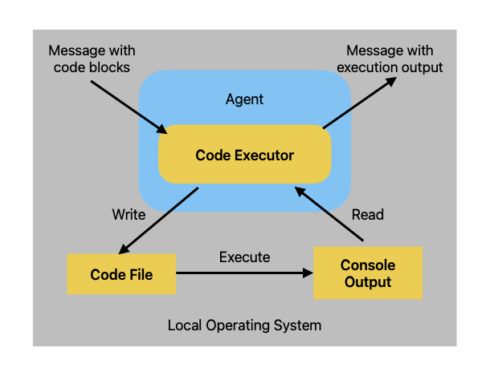

About Me
I am a dedicated Research Engineer with a deep passion for applying Machine Learning and Artificial Intelligence to solve complex real-world problems, particularly within the biomedical domain. My journey into AI began in 2020, driven by a fascination with data-driven discovery, which I pursued alongside my Bachelor’s degree in Mathematics from St. Xavier's College, Mumbai. This strong quantitative background provides a robust foundation for my work in ML.
For 3.5 years (Sep 2021 - Mar 2025), I contributed significantly at the National Institute of Biomedical Genomics (NIBMG), initially as a Senior Project Consultant and later as a Bioinformatics Research Engineer. My role focused on integrating advanced ML techniques, including Deep Learning (TensorFlow, PyTorch) and Graph Neural Networks, into cancer genomics research.
I thrive on tackling challenging projects, from developing patent‑pending models for patient risk stratification using pathology images (PIONEER) to creating novel multi‑omics integration methods with Graph Attention Networks (presented in Hamburg). I am also the creator of the Machine Learning Copilot Agent, an AI tool designed to automate ML workflows.
My goal is to continue pushing the boundaries of AI and contribute to impactful research and technological advancements.



Hover underlined text to see visuals.